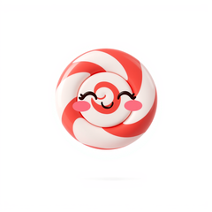

Demos.
VHS-recorded GIFs of every example shipped with the library. Regenerated automatically on every push that touches the source.

Counter Model
↑ / ↓ to count, q to quit. Demonstrates the full Model / Msg / Cmd loop.

Elm-architecture TUI runtime
Model / Msg / Cmd / Program. The runtime everything else builds on. Includes the cursed cell-diff renderer ported from Bubble Tea v2 — meaningful SSH bandwidth savings for slow-changing UIs.
composer require sugarcraft/candy-coreuse SugarCraft\Core\{Cmd, KeyType, Model, Msg, Program};
use SugarCraft\Core\Msg\KeyMsg;
final class Counter implements Model {
public function __construct(public readonly int $count = 0) {}
public function init(): ?\Closure { return null; }
public function update(Msg $msg): array {
if ($msg instanceof KeyMsg) {
return match (true) {
$msg->rune === 'q' => [$this, Cmd::quit()],
$msg->type === KeyType::Up => [new self($this->count + 1), null],
$msg->type === KeyType::Down => [new self($this->count - 1), null],
default => [$this, null],
};
}
return [$this, null];
}
public function view(): string {
return "count: $this->count\n(↑/↓ to change, q to quit)";
}
}
(new Program(new Counter()))->run();init(), update(Msg), view().Cmd::quit(), Cmd::batch(), Cmd::send() — async work scheduled, never inlined.VHS-recorded GIFs of every example shipped with the library. Regenerated automatically on every push that touches the source.